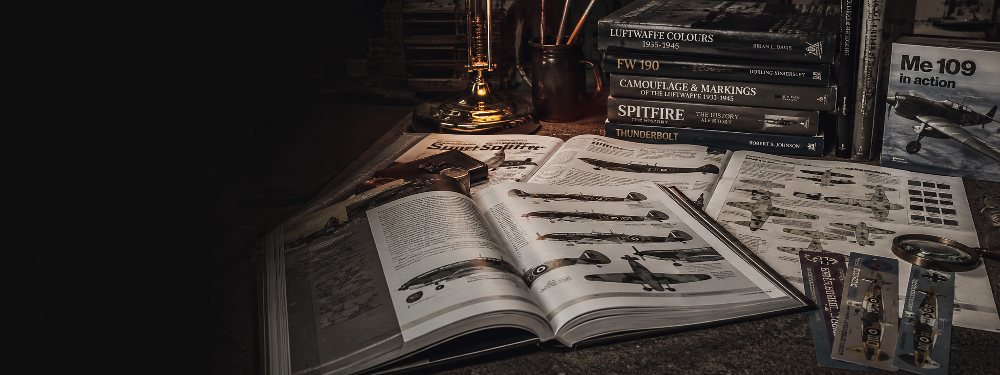

Reference book
Airframe & Miniature: The Hawker Hurricane
Hurricane variants, cockpits, modelling notes and markings research.

A practical reference shelf with Amazon links for aircraft monographs, camouflage books, modelling guides and theatre research.
Each reference now has a clickable Amazon UK search for the specific title, plus a route back to the relevant aircraft or paint section. Amazon listings move often, so these links search the exact book title rather than relying on fragile product IDs.
Hurricane variants, cockpits, modelling notes and markings research.

Early Spitfire variants and modelling differences.

Battle of Britain and early-war Luftwaffe modelling reference.

Luftwaffe fighter and fighter-bomber build reference.

Natural metal, invasion stripes and USAAF fighter build guidance.

Pacific Japanese aircraft colours, cockpit and markings research.

Bomber Command structure, crew positions and detail reference.

Wooden wonder variants, fighter-bomber and night fighter references.

Useful colour and identification context for IJN/IJAAF aircraft.
VVS camouflage, markings and weathering logic.

RLM colours, camouflage development and theatre schemes.

Olive drab, neutral grey, natural metal and unit marking context.
Use references to select a real aircraft, not just a box-art scheme.
Confirm canopy, propeller, guns, intakes, antennas and undercarriage before gluing.
Cross-check colour names with the paint code page before buying jars.
Base wear on theatre, service life and airfield conditions rather than generic grime.
Useful entry routes into kits, paints, techniques and theatre-led WW2 aircraft builds.
How the site is built, how ratings are judged, and how to suggest corrections.